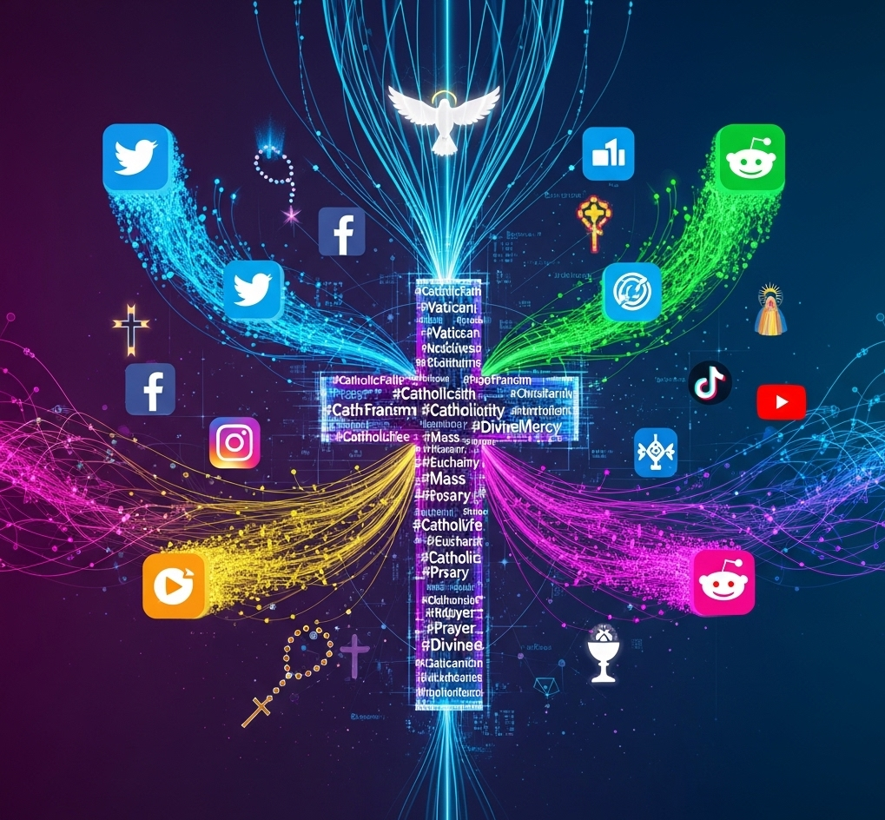

Prikaz i analiza katoličke tematike u digitalnom medijskom prostoru
Interdisciplinarni projekt koji primjenjuje metode računalnih društvenih znanosti za mapiranje i analizu prisutnosti katoličkih tema u digitalnom medijskom prostoru Hrvatske.


O projektu
Dobrodošli na službenu stranicu projekta “Prikaz i analiza katoličke tematike u digitalnom medijskom prostoru”. Ovaj trogodišnji projekt (2025.-2027.) provodi se na Odjelu za komunikologiju Hrvatskog katoličkog sveučilišta.
Iako digitalni mediji predstavljaju dominantnu komponentu javnog prostora, u Hrvatskoj nedostaje sustavni pregled njihovih tematskih sastavnica. Ovaj projekt ispunjava tu prazninu fokusirajući se na specifičnu i društveno relevantnu nišu: sadržaje s katoličkom tematikom.
Koristeći napredne metode iz područja računalnih društvenih znanosti, cilj nam je izgraditi sveobuhvatnu bazu podataka digitalnih objava te analizirati njihove značajke, narative i povezanost sa širim društvenim trendovima.
Ključna istraživačka pitanja
Naše istraživanje vođeno je sljedećim temeljnim pitanjima: - Kako se katolička tematika prikazuje i raspravlja u hrvatskom digitalnom medijskom prostoru? - Kakve su veze između katoličkih tema i drugih društvenih i političkih pitanja? - Koji su akteri i institucije najistaknutiji u tim raspravama? - Kako se narativi i sentiment mijenjaju ovisno o aktualnim događajima? - Kakva je mrežna dinamika između različitih platformi i medija koji obrađuju ove teme?
Metodologija
Projekt integrira tehnike podatkovne znanosti s metodama društvenih znanosti. Naš metodološki okvir uključuje: - Web scraping i API integracije: Automatizirano prikupljanje velikih količina podataka s informativnih portala i društvenih mreža. - Obrada prirodnog jezika (NLP): Tematsko modeliranje, analiza sentimenta i prepoznavanje imenovanih entiteta za strukturiranje i analizu tekstualnih podataka. - Mrežna analiza: Mapiranje odnosa između aktera, tema i medijskih izvora. - Statistička analiza: Identifikacija trendova, korelacija i obrazaca unutar prikupljenih podataka.
Sav programski kod i, gdje je to moguće, podaci bit će dostupni u skladu s FAIR principima za otvorenu znanost.
Projektni tim
Projekt vodi interdisciplinarni tim znanstvenika.
| Ime i Prezime | Uloga | Institucija/Odjel |
|---|---|---|
| doc. dr. sc. Luka Šikić | Voditelj projekta | Hrvatsko katoličko sveučilište (Komunikologija) |
| izv. prof. dr. sc. Andrea Sršen | Suradnica | Fakultet hrvatskih studija (Sociologija) |
| izv. prof. dr. sc. Irena Palić | Suradnica | Ekonomski fakultet, Zagreb (Statistika) |
| izv. prof. dr. sc. Lana Ciboci Perša | Suradnica | Hrvatsko katoličko sveučilište (Komunikologija) |
| izv. prof. dr. sc. Petra Palić | Suradnica | Hrvatsko katoličko sveučilište (Sociologija) |
| doc. dr. sc. Ivan Uldrijan | Suradnik | Hrvatsko katoličko sveučilište (Komunikologija) |
| dr. sc. Suzana Lipar Obrovac | Suradnica | Hrvatsko katoličko sveučilište (Odnosi s javnošću) |
| Hana Kilijan | Suradnica | Hrvatsko katoličko sveučilište (Komunikologija) |
| Veronika Novoselec | Suradnica | Hrvatsko katoličko sveučilište (Povijest) |
| Matea Topić Crnoja | Suradnica | Hrvatsko katoličko sveučilište (Sociologija) |
Rezultati i publikacije
Ova sekcija će se ažurirati poveznicama na recenzirane znanstvene radove, konferencijska izlaganja, izvještaje i podatkovne setove kako budu dostupni.
- [Naslov rada u pripremi, Časopis, Godina]
- [Godišnji izvještaj o projektu 2025.]
Kako citirati
Za citiranje projekta u cjelini, molimo koristite sljedeći format:
Šikić, L. i sur. (2025.-2027.). Prikaz i analiza katoličke tematike u digitalnom medijskom prostoru. Hrvatsko katoličko sveučilište. https://github.com/lusiki/DigiKat